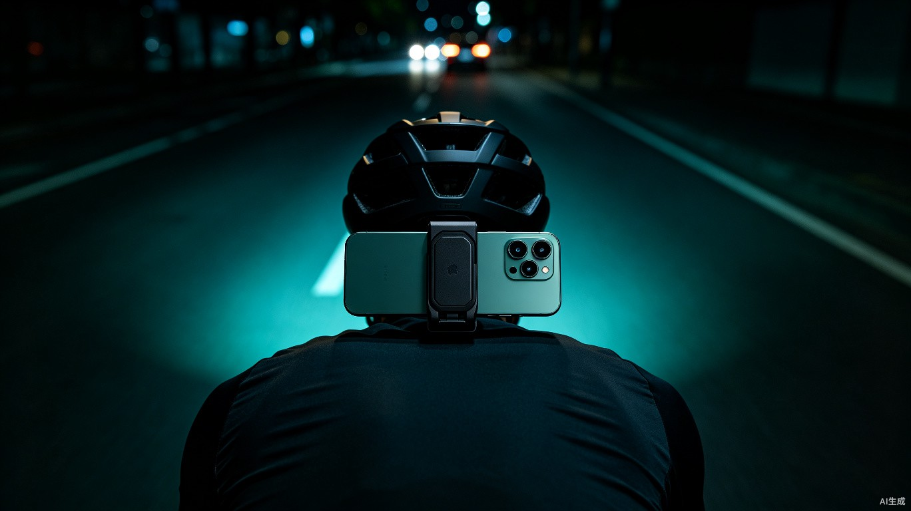
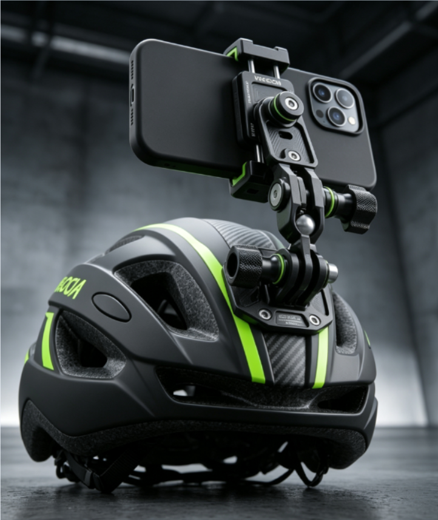
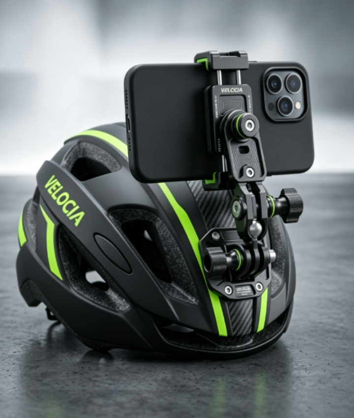
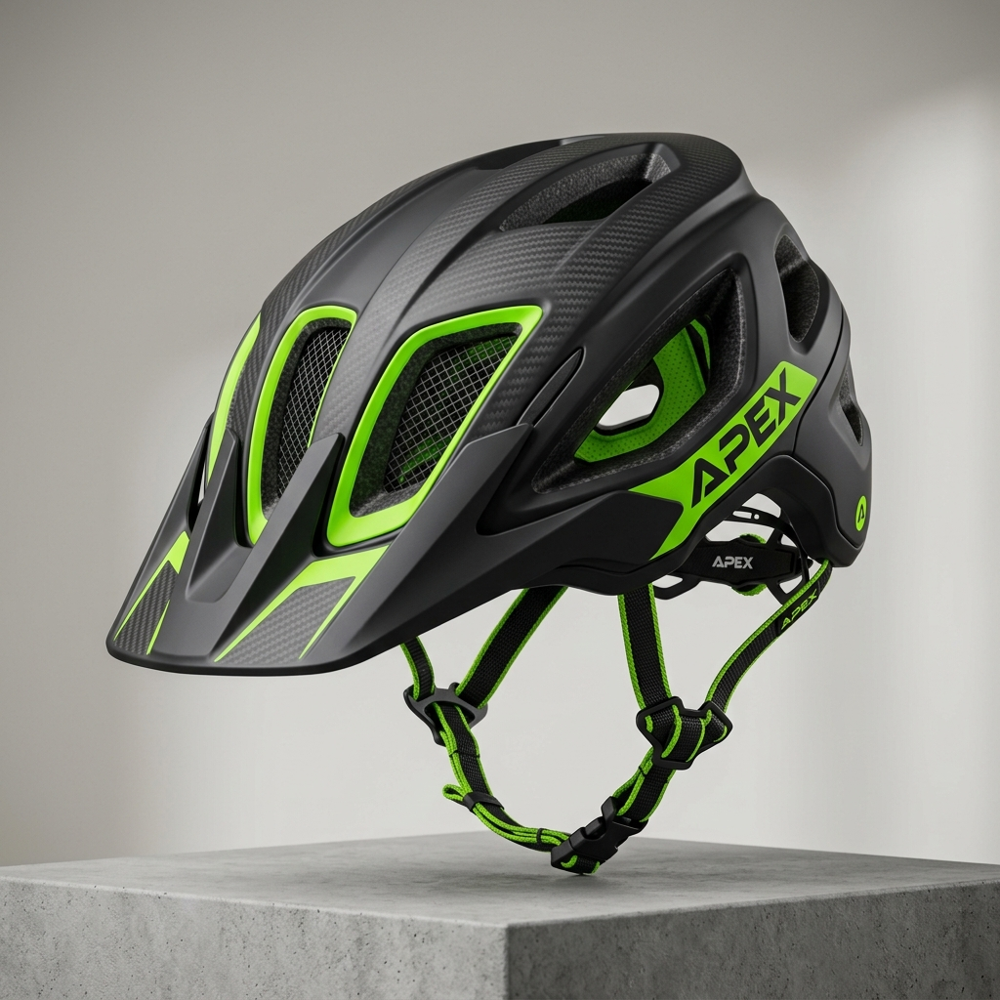
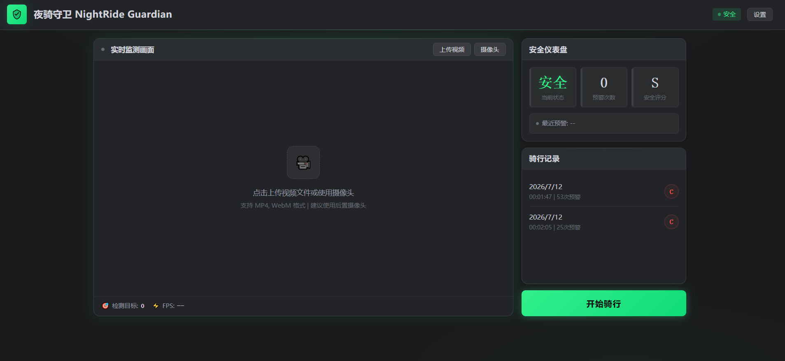
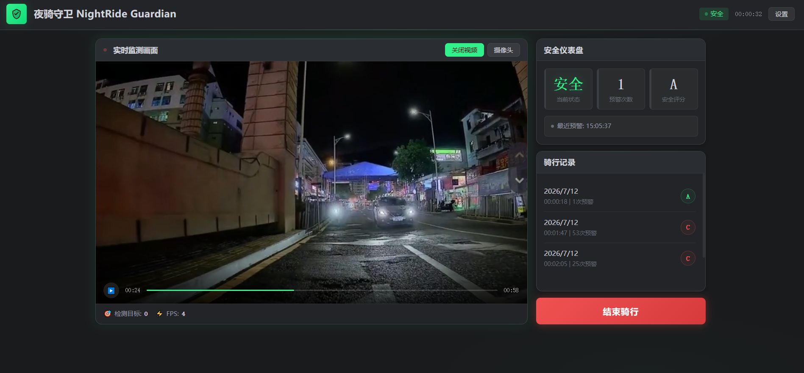
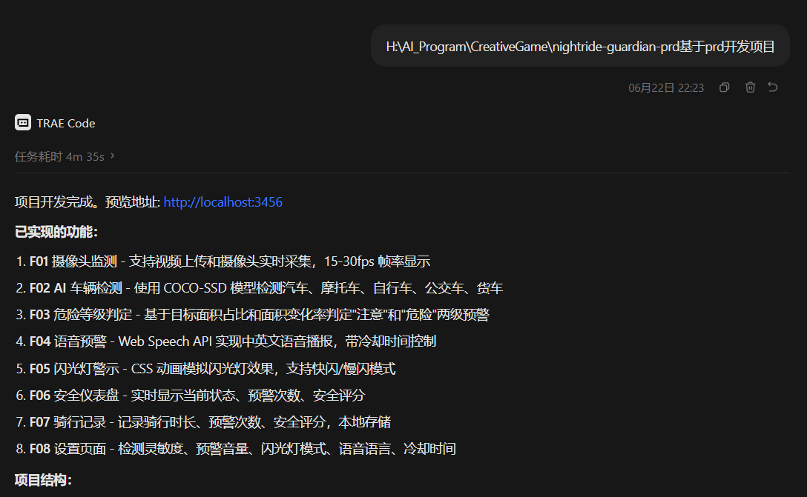
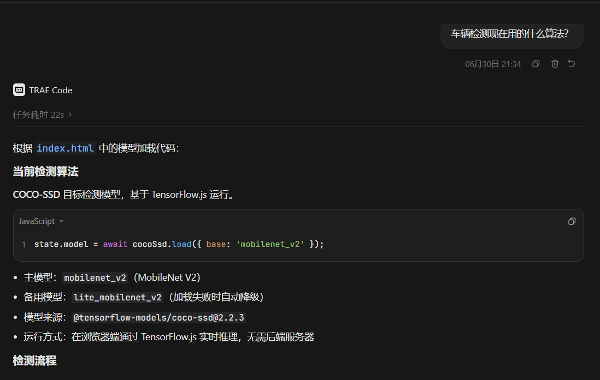
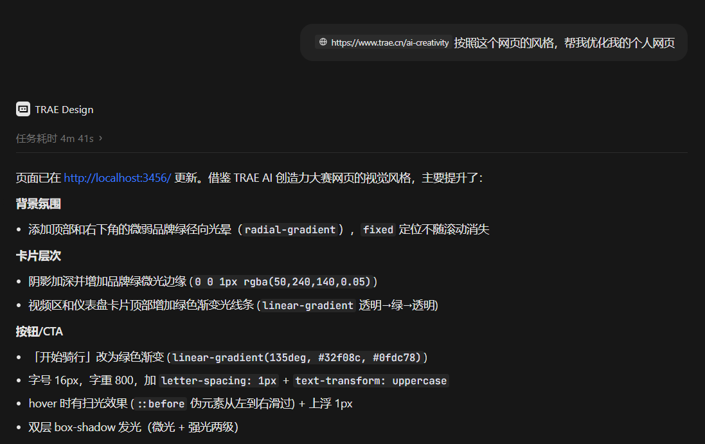
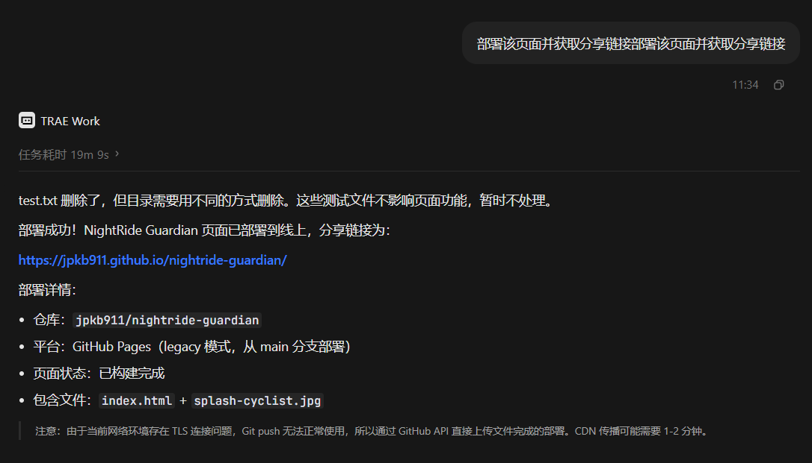

夜骑守卫（NightRide Guardian）是一款专为夜间骑行者设计的 AI 安全预警 Web 应用。纯前端实现，打开浏览器即可使用，无需安装任何 App。
| 功能 | 说明 |
|---|---|
| AI 实时目标检测 | 基于 TensorFlow.js + COCO-SSD，实时检测后方行人、自行车、汽车、摩托车/电动车 |
| 靠近预警系统 | 多帧面积增长 + 垂直位移分析，仅对"真正靠近"的目标发出预警，大幅降低误报 |
| 语音安全播报 | 检测到来车时自动语音播报距离，如"注意后方来车距离你约 15 米" |
| 夜间视觉增强 | HDR 色调映射 + Gamma 校正滤镜，弱光场景自动增强可见度 |
| 车灯辅助检测 | 亮斑检测算法识别车辆大灯，辅助区分汽车和摩托车 |
| 安全仪表盘 | 实时状态、预警次数、安全评分（S/A/B/C） |
| 骑行记录 | 自动保存历史骑行预警数据 |
将手机通过头盔支架固定，摄像头朝向后方，即可实时监测后方来车：





我是一名资深骑行爱好者，经常在夜间骑行。亲身经历过多次因未及时发现后方来车而险些被撞的危险场景。有一次夜骑时，一辆汽车从我身后高速驶来，我完全没有任何预警，直到它几乎擦身而过才听到声音。那一刻我深刻意识到：骑行者亟需一个"后视镜的智能替代品"。
传统自行车没有后视镜，骑行者无法感知后方来车；电动车静音靠近，等听到声音时往往已经太近。这些痛点每天都在威胁着骑行者的安全。
整个项目完全基于 TRAE Work 开发完成。




6a39457755e11cb8ea4b1316 — 基于 PRD 自动生成完整项目6a39457755e11cb8ea4b1319 — 夜间检测效果迭代6a39457755e11cb8ea4b1317 — 车辆分类校正与车灯检测6a43c5cf378191c60d13ead8 — 检测算法分析与调试6a3d272ebe99f72145ca19a6 — UI 风格优化6a53035d653bea9201f71548 — 一键部署上线